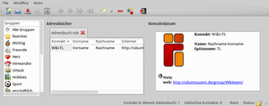
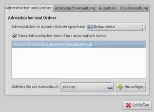

Rubrica
Archivierte Anleitung
Dieser Artikel wurde archiviert, da er - oder Teile daraus - nur noch unter einer älteren Ubuntu-Version nutzbar ist. Diese Anleitung wird vom Wiki-Team weder auf Richtigkeit überprüft noch anderweitig gepflegt. Zusätzlich wurde der Artikel für weitere Änderungen gesperrt.
Zum Verständnis dieses Artikels sind folgende Seiten hilfreich:
Einen Editor verwenden, optional
Root-Rechte erlangen, optional
Rubrica  ist eine Adressbuch-Anwendung. Obwohl alleinstehende Adressbücher nicht mehr dem Zeitgeist entsprechen, können diese beispielsweise eine nützliche Erweiterung für E-Mail-Programme wie Geary sein, die keine eigene Kontaktverwaltung enthalten. Besonders praktisch bei Rubrica ist die Zuweisung eines "Passbilds" zu einer Person. Darüber hinaus kann man Adressen einer oder mehreren Gruppen zuordnen, was nützlich ist, wenn man viele Adressen besitzt.
ist eine Adressbuch-Anwendung. Obwohl alleinstehende Adressbücher nicht mehr dem Zeitgeist entsprechen, können diese beispielsweise eine nützliche Erweiterung für E-Mail-Programme wie Geary sein, die keine eigene Kontaktverwaltung enthalten. Besonders praktisch bei Rubrica ist die Zuweisung eines "Passbilds" zu einer Person. Darüber hinaus kann man Adressen einer oder mehreren Gruppen zuordnen, was nützlich ist, wenn man viele Adressen besitzt.

Obwohl für GNOME 2 ausgelegt, lässt sich Rubrica durch die Verwendung der Grafikbibliothek GTK+ auch unter Xfce oder LXDE verwenden. Die Programmoberfläche ist nur rudimentär ins Deutsche übersetzt, was sich aber ändern lässt. Leider trüben viele kleine Fehler den praktischen Nutzen. Man merkt dem Programm deutlich an, dass es sehr ambitioniert begonnen wurde, aber viele Funktionen noch nicht ausgereift sind. Zwar ist eine neue Version geplant, die einige dieser Probleme beheben soll, nur fehlt ein Veröffentlichungstermin.
Vor diesem Hintergrund lautet die Empfehlung: nur als einfaches Adressbuch für Leute mit geringen Ansprüchen geeignet. Alternative Programme sind im Artikel Adressbuch zu finden.
Installation¶
 Das Programm ist bis einschließlich Ubuntu 14.04 in den offiziellen Paketquellen enthalten und kann über folgendes Paket installiert [1] werden:
Das Programm ist bis einschließlich Ubuntu 14.04 in den offiziellen Paketquellen enthalten und kann über folgendes Paket installiert [1] werden:
rubrica (universe)
 mit apturl
mit apturl
Paketliste zum Kopieren:
sudo apt-get install rubrica
sudo aptitude install rubrica
Bei Ubuntu-Varianten mit einem Anwendungsmenü erfolgt der Start [2] über den Menü-Eintrag "Büro -> Rubrica Addressbook". Wenn die englische Bezeichnung stört, bearbeitet man die Datei /usr/share/applications/rubrica2.desktop mit einem Editor [3] und Root-Rechten [4] und ergänzt folgende Zeilen:
Name[de]=Rubrica Adressbuch Comment[de]=Kontakte und Adressen verwalten
Deutsche Lokalisierung¶
Die in den Paketquellen enthaltene deutsche Übersetzung stammt aus dem Jahr 2007 und ist mehr oder weniger unbrauchbar. Eine aktualisierte Fassung, die zwar nicht perfekt, aber immer noch besser als die aus Ubuntu bzw. Debian ist, kann man als rubrica2.mo  herunterladen. Anschließend kopiert man diese Datei mit Root-Rechten nach /usr/share/locale/de/LC_MESSAGES/rubrica2.mo.
herunterladen. Anschließend kopiert man diese Datei mit Root-Rechten nach /usr/share/locale/de/LC_MESSAGES/rubrica2.mo.
Verwendung¶
Während die Eingabe von Adressen sicher selbsterklärend ist, kann das erstmalige Speichern eines Adressbuchs Nerven kosten. Daher wird folgende Vorgehensweise empfohlen:
Einen neuen Kontakt anlegen (nur als Kontaktname, ohne weitere Informationen)
Das als Standard benutzte Adressbuch "N.N." speichern (Vorgaben beibehalten) und Rubrica beenden
Die Datei ~/N.N..rub nach Belieben umbenennen (und bei Bedarf in einen anderen Ordner verschieben)
Rubrica erneut starten und über die Programmeinstellungen "Modifica -> Einstellungen" den Reiter "Adressbücher und Ordner" öffnen. Mit "Adressbuch wählen" die umbenannte Datei auswählen und – wichtig – mit der Schaltfläche "Hinzufügen" in der Liste der automatisch beim Programmstart zu öffnenden Adressbücher befördern (diese Option aktivieren!).
Einstellungsfenster schließen
Adressbuch "N.N." schließen
Rubrica ein zweites Mal beenden und erneut starten
Beim nächsten Programmstart wird nun automatisch das konfigurierte Adressbuch benutzt, ohne dass "N.N." auftaucht. Auf dem gleichen Weg kann man auch mit mehreren Adressbüchern arbeiten, falls eines nicht ausreichen sollte. Intern wird für die Adressbücher XML verwendet.
Adressfelder¶
Die vorgesehenen Adressfelder erfüllen auch fortgeschrittene Ansprüche. Neben Name, Spitzname, Titel, Telefonnummer usw. sind viele weitere möglich, beispielsweise zum Arbeitgeber (Firma), Geschlecht, Partner, Geburtstag und diversen Internet-Kontaktadressen (WWW, E-Mail, IRC, VoIP und Instant-Messenger). Für Informationen, die nicht in diese Raster passen, steht ein Freitextfeld zur Verfügung.
Hinweis:
Um neu eingegebene Adressen nicht beim Beenden zu verlieren, muss man zwingend manuell abspeichern! (Überschreiben: ja) Einfacher ist es, in den Einstellungen die Option "Adressbuchverwaltung -> Adressbücher nach jeder Änderung sichern" zu aktivieren.
Gruppen¶
Knapp 20 vorhandene Kategorien können zur Gruppierung von zusammengehörigen Adressen genutzt werden (auch eine Mehrfachzuordnung ist möglich). Wenn diese Kategorien nicht ausreichen, können bei Bedarf weitere erstellt werden. Über die linke Spalte "Gruppen" kann die Gruppierung aktiviert werden bzw. durch Auswahl von "Alle Gruppen" wieder rückgängig gemacht werden.
Suchen¶
Je mehr Adressen man besitzt, desto wichtiger wird eine Suchfunktion. Die integrierte Suche verwendet dazu entweder die vordefinierten Adressfelder wie Nachname, E-Mail etc. oder eine Freitextsuche. Gestartet wird die Suche über das Kontextmenü  des jeweiligen Adressbuchs.
des jeweiligen Adressbuchs.
Import¶
Vorhandene Adressen können aus Evolution, KAddressbook und als CSV-Dateien importiert werden. Der Import von Visitenkarten im vCard-Format ist nicht möglich. Trotz der Import-Möglichkeiten eignet sich Rubrica in der Praxis eher zur Neuanlage eines Adressbuchs.
CSV-Datei¶
Obwohl das Öffnen einer CSV-Datei problemlos gelingt, fragt Rubrica die Reihenfolge der Felder nicht ab. Beispiel: während das erste Feld im Regelfall wahrscheinlich den Vor- oder Nachnamen enthält, erwartet das Programm die Reihenfolge "Kontakt - Vorname - Nachname". Vor einer Datenübernahme ist also Bastelarbeit angesagt, um die CSV-Datei in eine dem Programm genehme Reihenfolge zu bringen. Auch leere Felder und fehlende Umlaute erschweren den Import.
Des Weiteren ist kein Verschieben von Adressen per "Drag'n'Drop" zwischen Adressbüchern möglich. Allerdings kann man einzelne Adressen ausschneiden bzw. kopieren und wieder einfügen. Außerdem muss man beachten, dass importierte Adressen gegen Veränderungen gesperrt sind – was in der Praxis bedeutet, dass man jede importierte Adresse nach der Übernahme einzeln manuell entsperren muss.
Export¶
vCard¶
Theoretisch können Adressen über "File -> Speichern unter" als vCard exportiert werden. Die Dateiendung lautet .vcf; das Format wird am rechten unteren Fensterrand ausgewählt. Praktisch ist diese essentielle Adressbuch-Funktion nicht nutzbar, da der Inhalt eines kompletten Adressbuchs unsinnigerweise als eine einzige vCard geschrieben wird.
CSV¶
Das Gleiche gilt für einen Export als .csv, wobei es hier in der Regel erwünscht ist, dass alle Adressen gleichzeitig exportiert werden. Dummerweise enthält der Export keine Feldbezeichnungen, sondern nur die "nackten" Daten – beim Import in ein anderes Programm darf also fröhlich gerätselt werden, was die einzelnen Spalten wohl bedeuten...
Drucken¶
Eine Druckfunktion ist nicht im Programm enthalten.
Einstellungen¶
 Die Programmeinstellungen sind über den Menüeintrag "Modifica -> Einstellungen" zu erreichen und auf vier Reiter (Tabs) verteilt:
"Adressbücher und Ordner" - zu verwendende Adressbücher (siehe auch Verwendung)
"Adressbuchverwaltung" - automatisches Speichern und Adressbuchkopien (Datensicherung)
"Aussehen" - Einstellungen zur Symbolleiste und innerhalb des Programms verwendete Schrift(größe)
"URL-Verwaltung" - Hilfsprogramme einstellen: Webbrowser, E-Mail-Programm und IRC-Client
Als Speicherordner für die Konfigurationsdaten dient ~/.gconf/apps/rubrica2/ im Homeverzeichnis.
 Übersichtsartikel
Übersichtsartikel- Erstellt mit Inyoka
-
 2004 – 2017 ubuntuusers.de • Einige Rechte vorbehalten
2004 – 2017 ubuntuusers.de • Einige Rechte vorbehalten
Lizenz • Kontakt • Datenschutz • Impressum • Serverstatus -
Serverhousing gespendet von